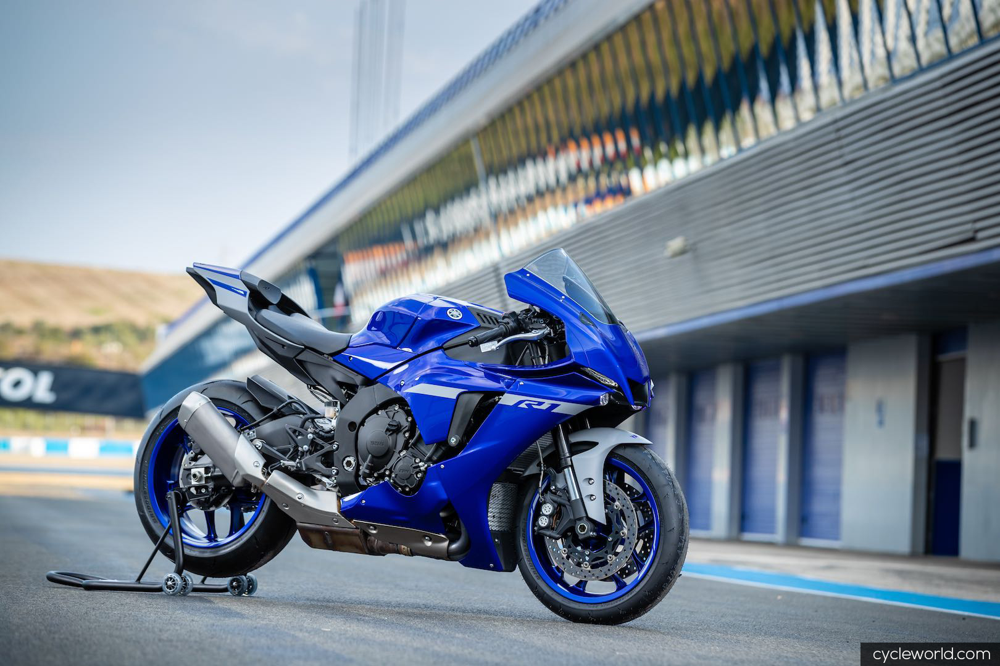
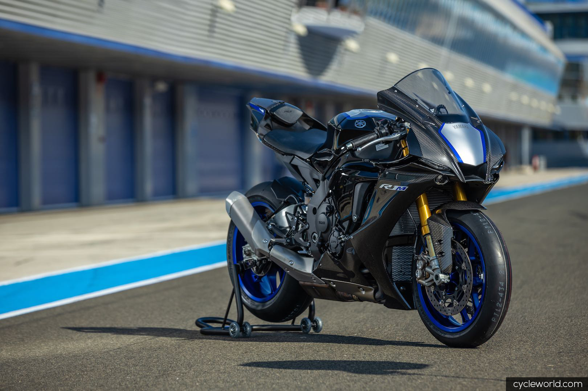

Yamaha menunjukan wajah baru dari Yamaha YZF-R1M dan YZF-R1 di WeatherTech Raceway Laguna Seca saat perlombaan World Superbike dan MotoAmerica.
Pertama dikenalkan adalah tampilan dari YZF-R1M 2020, lalu Yamaha YZF-R1 Supersport yang keduanya membawa mesin CP4 yang diperbarui kembali.
Banyak sentuhan perubahan untuk kedua model motor ini salah satunya pada elektronik yang diperbarui dan ditambah, bodywork yang lebih efisien secara aerodinamis, dan suspensi yang ditingkatkan.
R1 baru ini adalah puncak pengembangan superbike Yamaha yang inovasinya diperoleh dari 22 tahun di MotoGP, World Superbike, MotoAmerica, dan Endurance Balap Kejuaraan Dunia.
Bagian mesin yang diperbarui adalah saluran intake dan airbox yang diharap meningkatkan kinerja mesin.
Sensor Posisi Akselerator dengan Pegangan (APSG) yang baru telah digabungkan dengan sistem Yamaha Controlled Throttle (YCC-T) throttle by wire untuk menghilangkan kabel throttle yang digunakan pada model sebelumnya.
Yamaha mengatakan ini mengurangi berat dan memberikan operasi throttle yang lebih halus.
YZF-R1M dan YZF-R1 dibekali teknologi New Brake Control (BC) yang memberi pengendara dua mode intervensi.
BC1 untuk pengereman tegak lurus, sedangkan BC2 untuk pengereman corning yang ditingkatkan di mana intervensi sistem meningkat ketika sudut lean menjadi lebih curam.
Keduanya memiliki suspensi yang bisa dikontrol menggunakan Yamaha Ride Control (YRC) atau Y-TRAC.
Selain pembaruan pada elektronik ABS, unit kontrol hidrolik Bosch ABS lebih ringan dan garis baja stainless yang lebih ringkas dan dikepang menambah kesan dan responsif terhadap rem depan.
Selain teknologi dan mesin yang mendapat pembaruan, Yamaha YZF-R1M dan YZF-R1 juga mendapatkan pembaruan pada bagian bodinya.
Tampilan baru YZF-R1M dan YZF-R1 diklaim lebih efisien 5,3 persen dengan peningkatan bodi samping yang berbeda dari yang dulu.
Dalam sebuah mesin uji coba, angin dan tekanan pada pengendara berkurang sementara kenyamanan telah ditingkatkan di mana kaki pengendara bersentuhan dengan bodi motor.
Pihak Yamaha memberi bocoran harga YZF-R1M dan YZF-R1 yang diperkenalkan di WeatherTech Raceway Laguna Seca saat perlombaan World Superbike dan MotoAmerica.
Harga YZF-R1 2020 akan ditawarkan $ 17.300 atau setara Rp 242.108.798,68 dengan kurs dolar Amerika ($ 1 = Rp 13.995) yang akan dijual akhir bulan September.
Harga Yamaha R1M $ 26.099 atau sebesar Rp 365.297.042,72 dengan kurs dolar Amerika ($ 1 = Rp 13.995) yang akan dijual akhir bulan September.
Namun untuk memiliki kedua sepeda motor ini kalian harus memesan dari jauh-jauh hari karena akan diproduksi secara terbatas.
Sumber artikel :
https://www.gridoto.com/read/221785698/yamaha-resmi-kenalkan-yamaha-yzf-r1m-yzf-r1-versi-2020-dijual-terbatas-ini-ubahannya?page=all